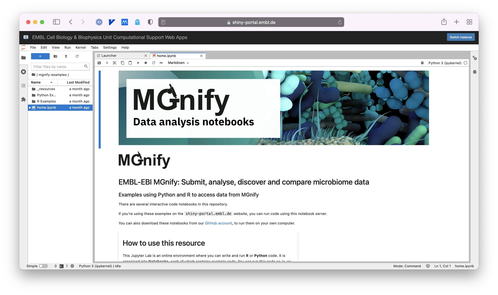
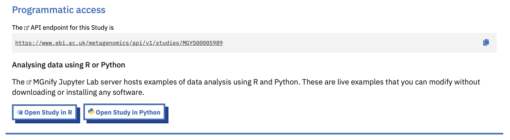

MGnify notebooks servers
A Jupyter Lab environment for the MGnify API
Short video tutorial
This website contains previews of the available notebooks. There are examples in both Python and R.
Where to run the notebooks
The notebooks can be run on notebooks.mgnify.org (hosted by EMBL; no login required) or on Galaxy Europe (login required).
The notebooks.mgnify.org resource
The MGnify Notebooks Server is a Jupyter Lab environment for doing data analysis online.
You don’t need to install anything – it is hosted by EMBL’s Cell Biology & Biophysics Unit and you use it in your web browser.
No account is required, but your data and the state of your notebooks will be erased after a short period of inactivity.

The Galaxy Europe server
Galaxy is a platform for FAIR data analysis. The MGnify notebooks are available on the Galaxy Europe server as an “interactive tool”. You need an account (free) and to login to be allocated the compute resources to use the tool there. Because of this, the notebooks hosted on Galaxy Europe are not directly linked from data objects on the MGnify website.
Your data and notebook state is persistent on Galaxy – you can save and resume your work later.
Use cases for the Notebooks Server
Programmatic access to MGnify data resources is done via the the API.
The Notebooks are useful if you’re just starting to explore the API and are looking for code examples to get started.
They are also useful if you only need to access a few pieces of data and so don’t want to install anything to get what you need.
There are examples in Python and in the R language.
MGnifyR: an R package for accessing MGnify
The Notebooks include code examples written using MGnifyR, an R package with convenience wrappers around the MGnify API, as well as recipes for cross-study analysis.
MGnifyR is already installed on the Notebook Server, so you can try it out straight away.
Take a look at this cross-study analysis example.
Using a Jupyter Notebook
A Jupyter Notebook is an interactive coding document. It is based on cells (as in blocks of content). Some cells are just text, and some contain code.
In our examples, there are text cells to explain what we’re doing, and code cells with example code that you can run.
Any output from the code will be printed directly below the code cell.
Only one cells runs at a time, so you can step through a notebook to step through a workflow.
Each example notebook we provide should run without any changes needed. You are free to change these as you wish – you’re working on a copy of the examples.
Unless you’re using the notebooks on Galaxy, when you leave your computer for a while or close the website your Jupyter Lab instance will end. Your work usually won’t be saved so make sure you download anything you need to keep before finishing.
Jumping to a Notebook from the MGnify website

Some resource views on the MGnify website show a “Programmatic access” banner. This lists the API URL for the resource, as well as links to any Notebooks that help you consume that API endpoint.
For example, opening a Study in R or Python means opening a Notebook on our server with example code to read in that study.
These are deep links, in that following them means the Notebook will already know the Study Accession (ID) you are interested in.
Using the notebooks on your own computer instead
The code for our notebooks is open source and available on GitHub.
The notebook server is containerised with Docker, making installation fairly simple.
You can also simply copy the notebooks themselves from GitHub, but you will have to install the dependencies using e.g. Conda.
Citation
@online{2026,
author = {, MGnify},
title = {MGnify Notebooks Servers},
date = {2026-07-13},
url = {https://docs.mgnify.org/src/docs/notebooks.html},
langid = {en}
}